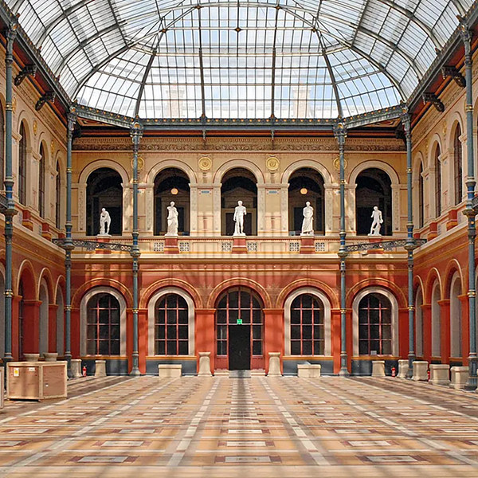
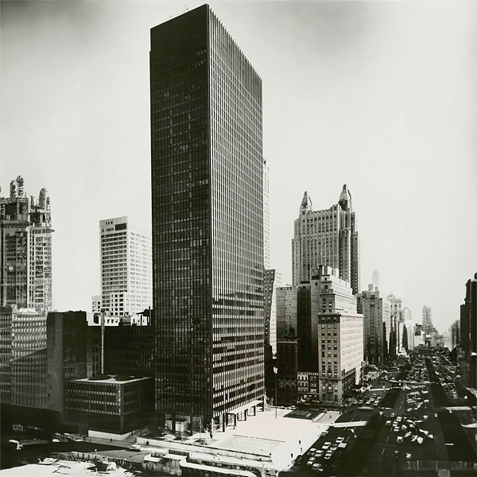
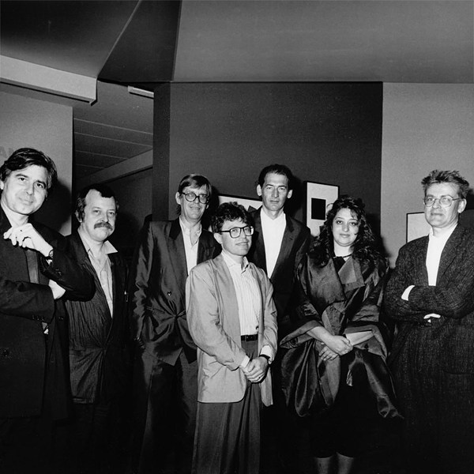
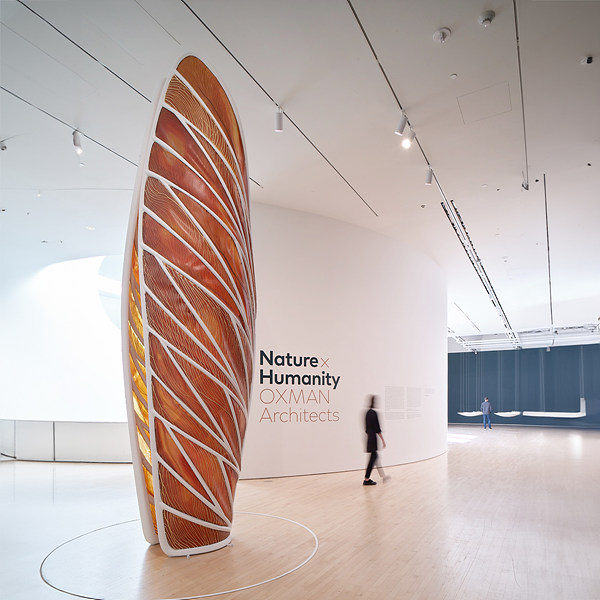

BC 4000-
4대 문명
[메소포타미아,나일,인더스,황하]
인간은 4계절 온난한 기후와 물을 공급받을 수 있는 곳에서 정착생활을 시작했다. 정착생활은 인간의 삶을 안정적으로 유지할 수 있게 해주었고, 이러한 안정은 인간이 더 나은 삶으로 나아갈 수 있는 발판이 되어 주었다.
BC 1000-221
주나라-춘추전국시대
문명을 경험한 나라는 자신들이 소유하고 있는 영역을 넘어, 영토를 확장하기 위한 무력활동을 하기 시작했고, 집단 간 생각의 차이, 인간의 권력에 대한 욕심은 한 나라에서 여러 국가로 분열되는 결과를 낳았다.
BC 776-
그리스
그리스는 민주주의와 정복활동을 통해 그들의 문화를 유지하고, 전파해 갔다. 철학과 수학을 통해 사고하고 분석해 내는 인간 본연의 특수성을 증명해 냈고, 이러한 그들의 문화는 현시대까지도 영향을 미치고 있다.
BC 6C-
불교_석가모니
사고하는 인간은 삶의 본질을 끈질기게 파고 들어 철학과 신학을 넘어 종교라는 신념화된 결집체를 만들었다. 종교는 삶의 궁극적인 목적을 찾기 위한 사고하는 인간의 상징화된 결과물이다.
BC 6C-
유교_공자
종교는 추상적 개념일수도 있지만, 그 시대와 집단의 문화를 대변하는 실질적 언행이기도 하다. 특히 유교는 우리나라 풍습에 깊게 자리한 '우리다움'을 나타내는 문화종교가 되었다.
BC 510
로마 공화국
초기 로마는 그리스와 함께 민주주의를 기반으로 한 공동체 국가로 성장했다. 직접 민주주의가 아닌 시민의 대표를 선출해 대표들을 통해 국정을 운영해 가는 정치형태를 보였다.
BC 221
중국 대륙 통일_진 시황제
춘추전국시대를 끝내고, 처음으로 중국 대륙을 진나라로 통일한 시황제는 중화라는 개념과 황제라는 칭호를 처음 사용했고, 2000년에 걸친 황제중심 중앙집권체제를 만드는 시초가 되었다.
BC 27
로마 제국
민주주의 기반의 공화정 체제였던 로마는 무력으로 정복한 속국을 결집시키기 위해 황제중심의 제국주의 체재로 전환하게 된다. 이후 속국을 점령한 여러 장군들이 황제를 자칭함에 따라 동로마 제국과 서로마 제국으로 나뉘게 된다.
0-33
예수 그리스도
로마제국 당시, 나사렛 동네 목수의 아들로 태어난 예수는 가족들과 함께 서른살까지 성장한다. 이후 3년간 제자들과 함께하며 가르침과 병고침을 이어가다 동족 유대인의 고발로 십자가형을 당한다. 사흘 만에 부활하고, 40일간 제자들에게 보인 후 승천한다.
220
한나라 > 위진남북조시대
중국은 한나라 이후 각 지방의 패권다툼으로 계속되는 내분을 겪게 된다. 여기에 북방 이민족의 침략으로 판세는 더욱 악화된다. 이러한 혼란기를 통해 주변 국가에 종교, 기술, 문화가 흘러갈 수 있는 기회가 만들어 진다.
313
밀라노 칙령 [로마 기독교 공인]
예수의 제자들에 의해 시작된 기독교가 점차 유럽 전역으로 퍼져 나가자 로마는 기독교를 박해하게 된다. 250년간의 박해에도 기독교는 오히려 더 굳건해 졌고, 로마는 결국 기독교를 국교로 공인하게 된다.
4C-7C
삼국시대 [고구려,백제,신라]
각 지역의 여러 계파싸움이 점차 고구려, 백제, 신라로 종속됐고, 삼국시대는 3세기 가량 지속된다. 위진남북조시대 때, 중국의 여러 문명이 고구려(5C), 백제(4C), 신라(6C)로 전달되어, 차례로 전성기를 누린다.
476
서로마 붕괴
< 게르만족 침략 < 훈족 침략
로마의 기독교 공인 이후 동로마와 서로마로 분열하게 된 로마는 훈족이 게르만족에게, 게르만족이 서로마에게 내리침략하면서 서로마가 붕괴하게 된다. 서로마 멸망 후에도 동로마는 흥망성쇠를 반복하며 1000여년간 로마제국을 유지해 간다.
610
이슬람 창시_무함마드
무함마드 사후, 선지자와 친했던 장로 중에서 후계자/교황이라 할 수 있는 칼리프를 선출하였다. 그 후 아라비아 반도 밖으로 진출하기 시작하여 633~656년 사이에 시리아, 이라크, 이집트, 이란 등을 정복하고 교세를 크게 넓혔다.
676-935
통일신라
기난 긴 삼국의 영토 싸움 끝에 당나라와 연합한 신라가 백제와 고구려를 무너뜨리고 삼국을 통일한다. 이때 김유신 장군의 활약이 크게 부각된다. 통일신라 성립 이후, 후삼국시대 전까지 220년 이상 전성기를 누리게 된다.
698-900
남북국시대
신라의 삼국통일과 발해의 건국부터 후삼국 시대 이전까지의 시기를 가리키는 한국사의 시대구분이다. 신라를 남국, 발해를 북국이라 칭한다. 발해를 한국사에 포함시키는 문제는 아직도 논란의 여지가 남아있다.
711
이슬람 > 스페인
서로마 붕괴 직후 중세 게르만 문화는 게르만의 본거지 격인 독일이 아니라 스페인에 남아 있게 된다. 게르만족 특유의 토지 분할상속을 빌미로 이슬람과 내통하던 스페인 귀족들에 의해 이슬람 제국이 이베리아 반도로 들어오게 되고, 이후 15세기 말까지 스페인은 이슬람 영역에 속해있게 된다.
732
이슬람 > 프랑크 왕국
이슬람 세력은 영토확장을 위해 프랑크 왕국을 공격하지만, 투르 푸아티에 전투에서 패배하면서 프랑크 왕국 탈환은 실패로 끝나게 된다. 투르 푸아티에 전투는 오늘날 이슬람의 유럽정복을 저지한 중요한 사건으로 평가되고 있다.
9C-
화약 발명
[중국 > 이슬람 > 유럽]
9세기부터 중국인들은 초석, 유황, 숯가루 등을 가지고 화약을 만들었다. 화기 역시 중국인들이 11세기에 만들었지만, 연대가 명확한 최초의 중국 화기는 1356년에 나타났다.
889-936
후삼국시대

통일신라 말기에 전국의 지방관과 호족들의 반란을 시작으로 몇몇 세력들은 국가 체계를 갖추게 되었고, 옛 백제 땅에 후백제(견훤), 옛 고구려 땅에 태봉(궁예), 경상도 일부 지역의 신라로 나누어지게 된다.
918-1392
고려시대

송악(지금의 개성시)의 고구려계 대호족 출신인 왕건이 역성혁명으로 자신의 군주였던 태봉(후고구려)의 궁예를 제거하고 고려를 건국했다. 국호가 고려인 것은 고구려 계승 의식을 나타냄과 동시에, 궁예 초기의 이름이던 고려로의 회복을 의미한다.
1095-1291
십자군 전쟁
예루살렘을 중심으로 한 레반트 지역의 지배권을 놓고 간헐적으로 발생한 유럽 기독교 국가들의 이슬람 원정을 가리킨다. 긴 원정으로 인한 보급체계 불안, 일원화 되지 않은 지휘통제 등이 십자군 원정 실패로 지목된다.
1206-14C
몽골 제국 [칭기스칸]
몽골이 건국한 초거대 육상 유목 제국으로, 인류 역사상 가장 큰 단일제국이자 황제국이다. 몽골 제국의 발흥 이후 실크로드를 통한 무역이 더 활발해졌으며, 동양과 서양이 모두 한 나라에 속하게 되어 이동이 수월해졌다.
1296
동방견문록 [마르코폴로]
마르코 폴로가 원나라 여행을 다닌 이야기를 기술한 여행기이다. 유럽인들에게 아시아에 대한 정보를 소개해 대항해시대를 연 원인 중의 하나로 꼽힌다. 수감 중, 소설가였던 동료가 마르코 폴로 이야기를 듣고 책으로 옮겼다.
1320
신곡 [단테]
단테의 신곡은 신의 섭리와 구원, 그리고 인간의 자유의지 문제를 중심으로 서구의 기독교 문명을 집대성한 문학작품이다. 예술과 문학, 역사, 전설, 종교, 철학, 정치학, 천문학, 자연 과학 등 인간의 삶 전반을 이야기하고 있다.
14C 후반-16C 후반
르네상스시대
중세에서 과학 혁명의 토대가 만들어지는 근세를 이어주는 중간 시기로, 문예 부흥 운동을 통해 문화, 예술 전반에 걸친 고대 그리스, 로마 문명의 재인식과 재수용을 목표로 했다. 인본주의의 태동기 였다.
1336-
대항해시대 [카나리아 제도 탐험]
포르투갈의 카나리아 제도 탐험을 시작으로 왕족들의 투자를 통해 미지의 영역을 개척하는 대항해시대의 막이 열렸다. 이 시대에 이루어진 대규모 해양탐험은 향후의 유럽 문화, 특히 유럽 백인의 미주 식민의 강력한 요인이 되었다.
1337-1453
백년전쟁
잉글랜드와 프랑스의 분리를 시작으로 유럽 국가들의 국경선과 민족성이 정립되기 시작하여, 서로 다투는 과정에서 자본의 이동을 통하여 여러 가지 발전을 일으키는 대대적인 변혁의 시작점이 되는 전쟁이다.
1346~1353
흑사병
비단길을 따라 교역했던 무역상들에 의해 동양에서 시작된 흑사병은 지중해 해운망을 따라 유럽 전역으로 퍼졌다. 유럽 총 인구의 30~60%가 사망했고, 이때 줄어든 세계 인구는 17세기가 되어서야 이전 수준으로 회복될 수 있었다.
1377
직지심체요절
고려시대 사찰 흥덕사에서 만들어진 인쇄물이자 현존하는 전세계에서 가장 오래된 금속활자본이다. 승려 백운경안 화상이 중국에서 가져온 요절을 재구성해 엮은 책으로, 무심선(무심무념)이라는 특유의 선 수행법을 가르친다.
1392-1910
조선시대
고려 말 원명교체 혼란기에, 신흥 무인으로 크게 성장한 이성계는 권문세족에 대항해 성장한 신진사대부와 힘을 합쳐 위화도 회군을 거쳐 고려를 무너뜨리고 유교에 기반한 새로운 국가 조선을 건국한다.
1402
혼일강리역대국도지도
조선 태종 2년(1402년)에 제작된 세계 지도이다. 지도 이름은 역대 나라의 수도를 표기한 지도라는 뜻이다. 몽골 제국을 대표하는 지도로 알려져 있으며, 이슬람의 지도학과 중국의 지도학이 결합된 산물이기도 하다.
1450
구텐베르크 활판인쇄술
구텐베르크에 의해 개발되었으며, 1452년부터 3년에 걸쳐서 구텐베르크 성서를 인쇄했다. 지식과 정보의 보급이 이전과는 비교도 할 수 없을 정도로 크게 확대되었고, 시민들의 계몽의식 고취에도 많은 영향을 주었다.
1453
동로마제국 멸망
동로마 제국의 수도인 콘스탄티노폴리스가 오스만 제국에게 함락당하면서 2,000년 넘게 이어져 온 로마제국에 마침표를 찍게 된다. 오스만 제국의 동지중해 및 발칸반도로의 진출과 지배권 확보에 중요한 역할을 하게 되었다.
1492~1504
아메리카 대륙 항로 개척
크리스토퍼 콜럼버스는 스페인 왕실의 후원을 받아 서회항로 개척에 나섰다가, 의도치 않게 아메리카 대륙을 발견했다. 한때는 신대륙을 발견한 영웅으로 평가되기도 했으나, 원주민에게 잔혹 행위를 일삼았다는 것이 밝혀지면서 그에 대한 평가가 재고되고 있다. 죽을 때까지 자신이 탐험한 곳을 아시아라고 믿었다고 한다.
1517
종교개혁 [루터]
면죄부 판매, 연옥에 대한 교황권 주장 등 서방교회의 부패함을 비판한 ‘95개조 반박문’ 공표를 시작으로 종교개혁가 마르틴 루터에 의해 추진된 운동이다. 중세의 종말과 근세의 개시를 알리는 사건으로 보기도 한다.
1519-1522
세계일주 [마젤란]
마젤란은 스페인 국왕 카를로스 1세의 후원으로 세계일주 항해에 도전하지만, 일주 중 필리핀 막탄섬에서 사망했다. 그의 함대가 본국으로 귀환했고, 생전 항해에서 필리핀까지 도달했었기에 최초의 세계일주자로 인정하고 있다.
1543
지동설 [코페르니쿠스]
태양이 우주의 중심에 위치하고 그 주변을 지구와 달, 다른 행성들이 공전한다는 설이다. 르네상스 이전까지 유력한 것으로 받아들여졌던 천동설을 대체하면서 인류의 우주관 정립 및 과학의 발전에 지대한 영향을 끼쳤다.
1592
임진왜란
한국의 왕조 조선과 일본이 모든 국력을 끌어 총력전으로 충돌한 유일한 전쟁이다. 전쟁 이후 중국에게는 명-청 교체에 결정적인 영향을 주게 되고, 일본에는 일본 열도를 통일했던 도요토미 정권이 막대한 국력 소모로 붕괴하여 에도 막부 수립으로 이어지게 된다.
1602
곤여만국전도 [마태오,이지조]
예수회 선교사 마테오 리치가 명나라 이지조와 함께 중국에서 제작해 목판으로 찍어낸 세계지도다. 동아시아 지식인들이 갖고 있던 기존의 중국 중심의 세계관을 다시 보게 해 주었다. 조선에선 숙종 34년(1708년) 관상감에서 모사하여 곤여도와 건상도가 8폭 병풍으로 제작되었다.
1760, 1776
산업혁명, 증기기관
18세기 영국에서 시작된 사회경제적 변화와 기술의 혁신과 이에 영향을 받아 크게 변한 인류 문명의 총체를 일컫는다. 영국에서 일어난 방적기의 개량을 시작으로 한 기술 혁명은 유럽 전역으로 확산되고, 기계설비를 갖춘 공장이 들어서면서 자본주의 경제체계가 확립되게 된다.
1789
프랑스 혁명 [자유,평등,박애]
유럽과 세계사에서, 정치 권력이 왕족과 귀족에서 자본가 계급으로 옮겨지면서 새로운 시대를 열게해준 혁명이다. 자본주의의 발전기에 시민 계급이 절대 왕정에 저항하여 봉건적 특권 계급과 투쟁해서 승리를 쟁취하고, 새로운 정부와 새로운 사회를 건설해낸 최초의 사회 혁명이다.
1839-1842
아편전쟁

대영제국과 청나라의 무역수지 문제로 일어난 전쟁으로 청으로 유출되는 은화를 영국이 다시 회수하기 위해 청에 아편을 살포한 것이 원인이다. 전쟁의 결과, 중화사상이 뿌리째 흔들리게 되고, 본격적인 서세동점 시대가 개막된다.
1854
일본 개항
일본은 에도 막부 초기부터 유지한 쇄국 정책을 폐지하고, 1854년 3월 31일 미일화친조약에 이어 1858년 미일수호통상조약을 맺으며 개항한다. 중간에 내항했던 류큐 왕국도 1854년에 미류수호조약을 맺었다. 이후로 러시아 함대와 영국 함대도 일본 항에 출몰하기 시작한다.
1861-1865
남북전쟁

노예제 폐지에 반대하는 남부연합군이 미합중국으로부터의 분리를 선언하고 찰스턴 항의 섬터 요새를 포격하면서 시작된 내전이다. 미국에서는 "American Civil War"라 부른다. 남부연합군이 패배, 노예제가 폐지됐다.
1868-1889
메이지 유신
19세기 일본이 막부를 타도하고 천황을 중심으로 하는 중앙집권 체제를 복구해, 정치·경제·문화 전 분야에 걸쳐 근대화를 성공시킨 일련의 개혁을 말한다. 메이지 유신의 시작은 1868년이며 1889년 헌법 제정으로 유신의 막을 내린다(중국 학계 정설).
1876
강화도 조약
근대 국제법에 따라 맺은 최초의 조약이며, 조선 정부에서는 흥선대원군 일파와 유생들의 반대가 있었으나, 박규수·오경석의 주장과 청나라 북양대신 이홍장의 권고, 고종의 적극적인 개항 의사에 따라 개항을 결정했다.
1905, 1906
경부선, 경의선
서울과 부산을 잇는 경부선과 서울과 신의주를 잇는 경의선은 1904년 러일전쟁발발로 일본의 군수물자 수송을 위해 급격히 공사가 진행됐다. 경부선은 1905년에, 경의선은 1906년에 각각 개통됐다.
1910-1945
일제강점기
한반도가 일본 제국의 통치하에 있었던 시기로, 한일 병합 이후 통감 및 총독이 조선총독부를 통해 천황의 명을 받아 통치하는 형식으로 식민지배가 이루어졌다. 한반도의 정치 및 외교 권한 또한 대부분 일본 제국에게 있었다.
1914
제1차 세계대전
오스트리아-헝가리 제국 왕위 후계자의 암살사건을 계기로 시작된 전쟁이지만, 동맹국들의 합류로 세계전으로 번지게 된다. 크게는 영국, 프랑스, 러시아 제국 등의 협상국과 독일 제국, 오스트리아-헝가리 제국 등의 동맹국으로 나뉜다. 미국의 참전 뒤, 독일의 항복으로 전쟁은 끝이 난다.
1917
소련 [레닌]
러시아 임시정부시절 국가 원수로 재임한 블라디미르 일리치 레닌은 1922년 소비에트 연방이라 불리는 사회주의 공화국을 완성하게 된다. 유라시아 북부 15개국의 연합으로 이뤄진 소련은 역사상 네번째로 큰 영토(대영제국, 몽골제국, 러시아제국)를 차지했던 제국이었고, 최초의 사회주의 국가이다.
1929
대공황
제1차 세계 대전 이후 호황기를 누리던 세계경제의 거품이 꺼지자 실물 경기는 하락을 맞이한다. 영국 최대의 투자자였던 클래런스 찰스 해트리 일당이 사기 및 위조죄로 투옥되면서 런던 증시가 폭락했다는 소식이 미국의 해외투자 심리를 위축시켰고, 이는 대공황의 불씨가 된다.
1938-
삼성, CJ, 신세계 [이병철]
일제강점기 시절, 협동정미소 주인이던 29세의 이병철은 김해에서의 농지 투기 실패 후 심기일전하여 만든 자본금 3만원으로 대구 수동에 삼성상회를 개업한다. 이는 현 삼성의 시초가 되고, 이병철회장 타계 후 경영권을 위임받은 이건희는 친족분리를 통해 신세계백화점, 전주제지, 제일제당을 별도의 회사로 독립시킨다.
1939-1945
제2차 세계대전
나치 독일의 폴란드 침공에 의해 발발한 전쟁으로 나치 독일, 이탈리아 왕국, 일본 제국의 추축국과 미국, 영국, 소련, 중화민국 국민정부, 프랑스의 연합국이 대치해 일본 제국이 항복할 때까지 총 6년 동안 이어진 전쟁이다.
1944
달러_기축통화 설정

17세기 이후부터 기축 통화로 사용되던 파운드는 제1차 세계대전 당시 영국이 전비 마련을 위해 다량의 파운드를 찍어내다 가치가 급격히 하락한다. 연이은 제2차 세계대전에서 전쟁물자 수출과 함께 제 3국의 안정성이 부각된 달러가 기축통화로 자리잡게 된다.
1945
히로시마,나가사키 원자폭탄
히로시마·나가사키 원자폭탄 투하사건은 1945년, 태평양 전쟁 당시 승기를 잡은 미국이 일본 제국의 항복을 이끌어내기 위해 일본 제국의 도시인 히로시마(8월 6일)와 나가사키(8월 9일)에 원자폭탄을 투하한 사건으로, 현재까지 최초이자 유일한 핵무기의 실전 투입 사례이다.
1945
8.15 광복
일본이 태평양 전쟁에서의 항복을 선언하며 식민지 조선이 일본 제국 조선총독부의 통치에서 해방된 날이다. 대한민국 정부 수립 이후 이날을 기념하기 위해 양력 8월 15일을 광복절로 지정했다. 북한도 해방절로 기념하고 있다.
1947-
현대 [정주영]
일제 강점기 1940년대 초반 시절에 자동차 정비회사인 아도 서비스를 인수하여 운영하였다. 이를 바탕으로 1946년 4월에 현대자동차공업사를, 1947년 현대토건사를 설립하면서 건설업을 시작하였고 현대그룹의 모체를 만들었다.
1948-1960
이승만 정부
이승만은 배재학당에서 수학했으며, 독립협회, 만민공동회, YMCA를 통해 해외에 한국의 주권회복을 청원하는 활동을 했다. 대한민국 초대 대통령(직선) 및 2~3대 대통령(간선)에 당선되며 12년간 대한민국 대통령으로 재임했다.
1967-1979
박정희 정부
박정희 정부는 5.16 군사정변으로 독재권력을 창출한 박정희가 1963년 치러진 제5대 대통령 선거에 출마하여 당선된 이후 탄생한 정부다. 박정희는 6·7대(직선제), 8·9대(간선제) 대통령에 당선되어 1979년까지 재임한다.
1949-
중국 공산주의 [마오쩌둥]
1927년 추수 봉기를 이끈 마오쩌둥은 중국공산당의 창립 멤버였고, 국민당과 국공 내전을 통해 중국공산당의 지도자가 되었다. 1949년 중국 공산당이 통제하는 마르크스-레닌주의 일당 국가인 중화인민공화국의 건국을 선언한다.
1950-1953
6.25 전쟁
1950년 6월 25일 오전 3시 30분에 조선민주주의인민공화국이 '폭풍 작전' 계획에 따라 38선 전역에 걸쳐 기습적으로 대한민국을 침공(남침)하면서 발발한 전쟁이다. 유엔군과 중국인민지원군 등이 참전하여 세계적인 대규모 전쟁으로 비화될 뻔 하였으나, 1953년 7월 27일 22시에 체결된 한국휴전협정에 따라 일단락되었다.
1971-1988
새마을운동
1970년 4월, 박정희 정부가 전국지방장관회의에서 새마을 가꾸기 운동을 거론, 동년 5~6월에 구체적인 방안이 마련되어 전개된 농촌 계몽 운동이다. 근면, 자조, 협동 3대 정신을 기조로 전국적인 생활 환경 및 국민 위생 개선, 농로 등 기초 인프라를 구축할 수 있었던 운동이다.
1980
5.18 민주화운동
광주시민과 전라남도민 중심으로, 조속한 민주 정부 수립, 전두환 보안사령관 및 신군부 세력의 퇴진, 계엄령 철폐 등을 요구했던 민주항쟁으로, 군부에 의한 헌정질서 파괴범죄와 부당한 공권력 행사로 다수의 사상자와 피해자가 발생했던 민주화 운동이다.
1984
Macintosh
당시 유행하던 명령 줄 인터페이스 대신 그래픽 사용자 인터페이스와 마우스를 사용한 최초의 개인용 컴퓨터였다. 일반 소비자에게 사용이 쉽고 가격이 낮은 컴퓨터를 보급하고자 했던 애플 직원 제프 래스킨에 의해 시작된 프로젝트로 그가 좋아했던 사과품종인 "Mcintosh"에서 따온 이름이다.
1989-
WWW의 탄생
World Wide Web은 인터넷에 연결된 컴퓨터를 이용해 정보를 공유할 수 있는 거미줄처럼 얼기설기 엮인 공간을 뜻하는 용어다. HTTP 프로토콜을 기반으로 HTML로 작성된 하이퍼텍스트 페이지를 웹 브라우저라는 특정한 프로그램으로 읽을 수 있게 하도록 구성되어 있다.
1989
베를린 장벽 붕괴
냉전 시기에 동베를린의 서쪽 경계선에 존재했던 장벽으로, 냉전과 독일 분단을 상징하는 대표적인 구조물 중 하나다. 1961년 8월 13일 동독에 의해 축조, 1989년 11월 9일에 동서 베를린 시민들에 의해 붕괴되었다.
1991
소련 붕괴 > 냉전 종식
소련은 스탈린 시기 형성된 관료제 사회의 내재적 계급모순과 그에 따른 부정부패가 심각했다. 결국 건국 69주년을 4일 앞둔 1991년 12월 26일, 소련은 붕괴된다. 20세기 후반 자본주의와 공산주의 세력이 이념적으로 대립하던 냉전 시대가 막을 내렸다.
1997-2001
외환위기
1997년 1월 대기업 한보의 부도로 촉발된 신용경색은 재벌 그룹들을 줄줄이 도산 시켰다. 외국 자본들이 자금 회수를 요청하면서 외환위기 상태에 놓이게 된다. 결국 한국 정부는 IMF에 긴급 구제금융을 신청하고, 회생절차를 밟게 된다. IMF 사태 이후로 한국사회 전반에 많은 변화가 일어나게 된다.
2000
남북정상회담 [김대중 정부]
김대중대통령과 김정일국방위원장이 평양에서 만나 2박 3일간 진행한 정상회담이다. 첫 남북정상회담이었고, 정상회담 이후, 이산가족 상봉, 금강산 관광, 남북 스포츠 경기 참가 등 민간 교류 사업이 본격적으로 진행됐었다. 김대중 대통령은 이를 계기로 노벨 평화상을 수상한다.
2001
9.11 테러
이슬람 근본주의 세력인 알카에다가 일으킨 테러 사건으로 납치한 항공기를 건물에 충돌시킨 자살테러 사건이다. 세계무역센터, 국방부 청사 건물인 펜타곤이 공격받았으며, 백악관과 미국 국회의사당이 목표로 노려져었다. 약 3천 명의 사망자와 6천여명 이상의 부상자가 발생했다.
2003-2011
이라크 전쟁
테러와의 전쟁 중 두 번째 전쟁이며, 1990년 걸프 전쟁에 이어 두 번째로 일어났다고 해서 '제2차 걸프전쟁'이라고도 한다. 대량학살무기 사용을 막기 위해 침공했다는 설과 석유와 중동 장악을 목표로 들어갔다는 설 등이 있다.
2007
아이폰
애플에서 만든 최초의 스마트폰이다. 가상 키보드를 갖춘 멀티 터치 화면으로 구성되며, 사진촬영, 음악재생 뿐만 아니라, 셀룰러 망이나 와이파이에 연결돼 통화, 웹 브라우징, 이메일과 문자 메시지 송수신을 할 수 있다. 유비쿼터스를 현실화한 혁신적 모바일 기기다.
2008
세계금융위기
2007년 4월 서브프라임 모기지 사태를 시작으로 2008년 9월 세계 금융 위기까지 이어진다. 2000년대 후반 미국의 금융 시장에서 시작되어 전 세계로 파급 된 대규모의 금융 위기 사태를 통틀어 이르는 말로, 1929년의 경제 대공황에 버금가는 세계적 수준의 경제적 혼란을 초래했다.
2010
천안함 피격 사건
2010년 3월 26일 밤 9시 22분 대한민국 백령도 남서쪽 약 1km 지점에서 포항급 초계함인 PCC-772 천안함이 초계임무 수행 도중 북한 해군 잠수정의 어뢰에 공격당해 선체가 반파되며 침몰한 사고였다.
2014
세월호 침몰 사고
인천에서 제주로 오가는 청해진해운 소속 여객선 세월호가 전라남도 진도군 관매도 부근 해상에서 침몰하면서 승객 중 299명이 사망하고 5명이 영구 실종된 대형 참사다. 한국사회의 여러 문제가 극단적인 결과로 나타난 사건이다.
2016
구글 딥마인드 챌린지 매치
[이세돌 vs 알파고]
알파고와 이세돌 9단이 서울의 포 시즌스 호텔에서 총 5회에 걸쳐 대국한 바둑 대결이다. 최고의 바둑 인공지능 프로그램과 인간계 최고 실력자의 대결로 주목을 받았으며, 최종 결과는 알파고가 4승 1패로 승리하였다. 대국 이후 AI에 대한 관심이 더욱 증가하게 되었다.
2018
남북정상회담 [문재인 정부]
남한과 북한의 세 번째 정상회담이다. 2018년 4월 27일 판문점 공동경비구역 남측 구역 내에 있는 평화의 집에서 열렸으며, 문재인 대통령과 김정은 국무위원장, 양측 대표단이 회담에 참석했다. 남북미 정상회담, 북미정상회담을 이어가는 발판이 되었지만, 결과는 좋지 않았다.
2020-2023
COVID-19
2019년 12월에 중국에서 첫 사례가 보고되었고 전 세계로 퍼지면서 팬데믹상황까지 가게 됐다. 의료계 뿐만 아니라 정치, 사회, 경제, 문화 전반에 걸쳐 재점검의 시기였으며, 특히 교육/기술 분야에서의 발전 주기를 급속도로 당겨올 수 있는 계기가 되었다.
2023-
Generative AI Tools
ChatGPT를 필두로 여러 분야에서 생성형 AI기술활용을 시도하고 있고, 상용화까지도 되고 있다. 초기에 뜨거웠던 관심과는 달리 약간의 실망감과 함께 점검기를 보내고 있는 듯 하다. AI를 어떻게 활용할 수 있을지 고민하고 준비해야할 때인 것 같다.
1676-1759
겸제정선
조선의 화가이자 문신이다. 김창집의 천거로 도화서의 화원이 된다. 처음에는 중국 남화에서 출발했으나 30세를 전후하여 한국 산수화의 독자적인 특징을 살린 산수사생의 진경으로 전환해 동방 진경산수화의 종화가 되었다.
In the beginning God created the heavens and the earth.
Genesis 1:1
"Glory to God in the highest, and on earth peace to men on whom his favor rests."
Luke 2:14
Then Jesus said to his disciples, "If anyone would come after me, he must deny himself and take up his cross and follow me. For whoever wants to save his life will lose it, but whoever loses his life for me will find it.
Matthew 16:24-25
“The past is the mirror of the future.”
Baha’u’llah 1817-1892
"Perfection is achieved, not when there is nothing more to add,
but when there is nothing
left to take away."
Antoine de Saint-Exupéry 1900-1944
“Architecture should speak of its time and place, but yearn for timelessness.”
Frank Gehry 1929-
“역사 속 내 삶의 크기는 너무나도 작지만,
내게 주어진 시간 속에서 누군가에 영감이 될 작은 울림이 되고 싶다.”
JK 1986-
“I want to touch people with my art, I want them to say;
he feels deeply, he feels
tenderly.”
Vincent van Gogh 1853-1890
“God is in the details.”
Ludwig Mies Van Der Rohe 1886-1969
10 Principles for Good Design
Dieter Rams 1932-
01. Good design is innovative
02. Good design makes a product useful
03. Good design
is aesthetic
04. Good design makes a product understandable
05. Good design is unobtrusive
06. Good
design is honest
07. Good design is long-lasting
08. Good design is thorough down to the last
detail
09. Good design is environmentally-friendly
10. Good design is as little design as possible
"The simpler it is, the deeper it gets."
Gints Zilbalodis 1994-
19860308
이종국 출생
서울에서 출생한 이종국은 태어나자마자 가족들과 함께 경기도 남양주시에 큰 놀이터가 있는 5개층의 아파트로 이사한다. 이후 성인이 되기 전까지 20년간 이곳에서 성장한다.
199103-199302
자연유치원
이종국이 6~7살까지 다녔던 자연유치원은 남양주시에 위치한 사립유치원이다. 장난기가 많던 개구쟁이 이종국은 늘 밝고, 활기찬 아이였다고 한다.
199303-199902
금곡초등학교
어려서부터 활동적였던 이종국은 각종 스포츠와 음악에 재능을 보이며 많은 친구들과 어울려 지낸다. 운동 좋아하는 친구, 음악 좋아하는 친구, 게임 좋아하는 친구, 공부 좋아하는 친구 모두 경계없이 두루두루 사이 좋게 지냈다.
199903-200202
금곡중학교
이종국이 다니던 교회에 드럼이 들어오며, 락 음악과 CCM음악에 관심을 갖고 드럼과 기타연습에 한동안 집중한다. 이후 '심장마비'란 금곡중학교 최초 밴드부를 만들고, 운동회 공연, 졸업 공연 등을 하며 금곡중학교 공식 밴드로 성장한다. 중학교때에도 유도부, 댄스팀, 노는 친구들, 공부하는 친구들 가리지 않고 친하게 지낸다.
200203-200502
동화고등학교
고등학교 때에도 이종국은 학교공부 이외의 것에 더 많은 관심을 갖는다. 중학교때부터 팀으로 활동했던 축구팀 '무명'에서 주말마다 볼을 찼고, 장르 가리지 않고 다양한 음악을 들으며 공부했다. 시험기간이 끝나면 카메라를 들고 출사를 다니기도 했다. 카메라는 디자인에 '디'자도 모르던 이종국이 디자인에 관심을 가지게 된 계기가 된다.
20060815-20070215
연세대학교 학군단
대학교 2학년 초 때부터 준비한 학군단에 합격한 이종국은 2학년 2학기를 마치고 첫 겨울방학 훈련을 받고 돌아와 성적을 확인하고 충격에 빠진다. 통제와 규율을 따라야 하는 학군단 생활과 디자인을 병행하는 2년의 대학생활에 대해서도 고민하게 된다. 결국 학군단을 포기하고 휴학을 하게 된다.
20081103-20101110
대한민국 해군 [항공병]
졸업 후 장교로 군대를 가는 학사장교를 생각하며, 잠시 한 학기 복학하지만, 더 낮은 곳으로 가야한다는 생각으로 해군 항공병에 지원한다. 진해(기초훈련)-포항(항공전단)-목포(교육전대)를 거쳐 논산 항공대대에 자대를 배치 받는다. 해군참모총장과 해병대사령관 항공기 탑승임무를 수행하는 대대로 간부포함 30명가량의 소규모 대대였다.
20130107-20131224
삼성(인사팀) 계약직 디자이너
졸업을 앞두고 취업준비를 하던 이종국은 헤드헌팅 업체를 통해 삼성디스플레이 인사팀 디자이너로 일하게 된다. 6개월간 삼성디스플레이(아산)에서, 나머지 6개월간 삼성전자 S.LSI(기흥)에서 근무하며, 교육관련 컨텐츠(홍보물, 교육자료 등) 디자인, 영상 촬영/편집 등을 하게 된다.
20140701-20141029
(국비지원)웹개발자과정
안정적인 대기업 계약직 근무 연장 대신, 군 전역 후 잠시 일했었지만 신앙적으로 깊이 관계맺고 있던 홍보물 제작 디자인회사에서 다시 잠깐 동안 일하게 된다. 이후 개발에 대한 관심이 많았던 이종국은 국비지원 웹개발자과정에 참여하게 되고, 잠깐이지만 프로그램의 기초지식과 알고리즘적 사고를 배울 수 있게 된다.
20141030-20150201
핸드스튜디오
[웹/앱/그래픽 디자이너]
웹 개발자 과정 중, 지인의 소개로 입사하게 된 핸드스튜디오는 삼성전자 스마트 TV에 들어가는 앱을 디자인하고 개발하는 회사였다. 복지가 좋기로도 유명했으며, 언론에도 여러 번 소개되고 있는 회사였다. 로고 디자인, UI(GUI)디자인을 맡아 했으며, 기획자와 개발자 사이에서의 커뮤니케이션 방식을 배울 수 있었다.
20150202-20150627
매드스퀘어
[웹/앱/그래픽 디자이너]

핸드스튜디오의 대표가 대표직을 기존 기획팀장에게 넘겨주고 새롭게 시작한 스타트업 회사다. 동영상 포털 플랫폼으로 시작했으나, 동남아시아를 타겟팅한 뷰티 플랫폼으로 피봇했다. 초기 스타트업의 서비스 기획/디자인/개발 과정과 투자유치 활동들이 어떻게 이뤄지는지 배울 수 있었다. 회사 내 경쟁구도에 지쳐 중도 하차한다.
20150909-20160229
이안알앤씨
[건설현장_W123]
퇴사 후 해야할 일을 정리하던 중 한 중소건설회사의 채용공고를 보게 된다. 자신의 마음과 생각을 담아 자기소개서와 이력서를 작성하고, 건축에 '건'자도 모르던 이종국이 처음 건축회사에 입사하게 된다. 이후 건축 시공과 디자인 사이에서 고민하다 공부를 더 해야겠다는 마음을 가지게 된다.
20160302-20161231
현대건설기술교육원(건설BIM)
[건축기사, LEED AP BD+C]
현대건설에서 주관하고 국비지원으로 진행되는 실무교육프로그램이다. 건축시공 뿐만 아니라, 측량, 토목, 공정, 영어 등 건축과 관련된 거의 모든 것을 이곳에서 배울 수 있었고, 특히 BIM에 대한 전반적인 지식을 습득할 수 있었다. 기간 중 건축기사와 LEED AP BD+C 자격증을 취득한다.
20170102-20170302
국보디자인
[인테리어현장_쿠팡오피스]
현대건설기술교육원 담임 교수님과 국보디자인 이사님 추천으로 국보디자인에 입사하게 된다. 전문화된 영역(예산, 자재, 설계, 시공 등)에서 준비/실행되는 모습을 직접 보고 듣고 느낄 수 있었다. 인테리어 본공사가 시작되는 시기에 퇴사하게 된다.
20170701-20170718
DL E&C
[건설현장_하남지식산업센터]
퇴사 후 가구 만들기에 열심이던 이종국은 현대건설기술교육원에서 만난 동생의 소개로 대림건설 하남지식산업센터 현장에 합류하게 된다. 프로젝트 초기에 투입돼 대규모 부대토목공사의 시공과정을 잠깐이나마 직접적으로 경험할 수 있었다.
20170724-20180226
시드건축사사무소 [실시설계]
하남현장에 합류하기 전, 입사지원서를 제출했던 곳에서 한 달만에 연락이 왔다. 이종국이 가고자 했던 길은 건축 설계였기에 현장대신 건축사사무소를 택하게 된다.이 곳에서도 더 깊이 있는 배움에 대한 갈망으로 오래 근무하지 못하지만, 삼우건축과 협력관계에서 만들어진 체계화된 실시설계도면과 소통방식을 제대로 배울 수 있었던 회사었다.
20180305-20180901
청담건축사사무소
[계획설계, 대관업무]
한양사이버대학교 건축학과에 입학하고 건축사예비시험을 보려 했으나, 학사과정이 미인정된다는 것을 알게 된다. 공부를 위해 본가로 들어갔었기에 남양주 소재 사무소를 알아본다. 남양주시청 근방 주택/근생 설계, 대관업무 대행, 불법건축물 양성화 작업을 주로하는 사무소에서 일한다.
Prehistory
막집, 움집,
티피, 이글루, 고상가옥
선사시대인들은 나뭇가지와 가죽 등을 이용해 임시로 거주하기 위한 막집을 지었어살다가, 추위와 비바람을 피하기 위해 반지하 형태의 땅을 파, 자연적인 토벽을 만들어 지붕을 덮는 움집을 지었다. 기후대에 따라 자연재료를 활용해 비바람과 추위, 맹수의 피해를 막기 위한 형태로 집을 지어 살았다.
BC 7000-5000
Çatalhöyük
튀르키예 중앙 아나톨리아 지역에 있는 신석기 시대 초기 도시 유적으로 대략 기원전 7500년에서 기원전 5700년 사이에 존재했을 것으로 추정된다. 이 유적은 1958년 제임스 멜라트에 의해 처음 발굴된 이후에 1961년부터 1965년까지 발굴했으며, 2012년 유네스코 세계유산으로 지정되었다.
BC 2500
피라미드
다른 문명권에서도 피라미드 형태의 유적을 많이 만들었지만, 그 중 가장 유명한 것은 이집트 기자의 3대 피라미드다. 이집트 피라미드는 내부에서 여러 체의 미라와 매장에 쓰인 석관, 항아리, 황금 제품 등이 나왔고, 부조나 비문 등 제사에 쓰였던 글들이 발견돼 무덤으로 쓰였음을 알 수 있었다.
BC 2100
지구라트
어원은 아카드어의 𒁲𒊑(zaqāru)로 추정되며 높이 솟아올리다라는 의미를 지니고 있다. 히브리어에서는 같은 어근을 지닌 단어가 זקור(ZQVR)로 표기 되는데, ‘세우다’라는 뜻이다. 즉, 세워올린 탑이라는 의미이다. 고대 메소포타미아나 엘람의 도시에서 도시가 모시는 주신에게 바쳐진 성탑이다.
BC 447-432
파르테논
고대 그리스 시대에 아테네의 수호 여신 아테나를 모시기 위해 건설된 대리석 건축물이다. 아크로폴리스와 함께 높은 언덕 위에 건축되어, 아테네 안이라면 어디서든 볼 수 있다. 유네스코의 엠블럼이 파르테논 신전을 모티브로 디자인 됐을 정도로 현존하는 건축물 중 가장 상징적인 건축물이라 할 수 있다.
BC 220-AD 17C
만리장성

기원전 220년 진시황은 북방 민족의 침입에 대비하여 통합된 방어 산성을 쌓기로 하였다. 만리장성의 축조는 그 후 명나라 시대(1368~1644)까지 계속되었고, 세계에서 가장 장대한 규모의 군사 시설물이 되었다. 이는 역사적·전략적으로 중요한 성벽인 동시에 건축학적으로도 탁월한 유적이다.
BC 150s-AD 1450s
비단길
비단길은 동양과 서양을 잇는 무역로로, 튀르크 민족 등 북방 기마민족들이 개척하고 경영한 길이다. 북방 기마민족들은 이 길을 이용해 정복활동을 펼쳤으며, 시간이 흐르면서 다양한 교역품을 전달하는 통로로 확대됐다. 무역뿐 아니라 문화가 유통되는 통로로도 기능했다.
BC 1C
메종 카레
프랑스 남부의 네메스에 있는 고대 로마 신전으로, 구 로마 제국의 영토에서 가장 잘 보존된 로마 신전 중 하나다. 비트루비우스의 글에 묘사된 토스카나 양식의 로마 신전과 거의 동일한 형태로 비트루비우스 건축의 전형적인 예라 볼 수 있다.
BC 1C
Pont du Gard
프랑스 옥시타니 가르주 가르동 강에 놓인 고대 로마 시절의 수도교다. 로마에서 '물'은 생존과 직결된 아주 중요한 자원이었다. 거대 도시를 유지하기 위해서는 더 많은 물이 필요했고, 높은 산에서 물을 끌어올 수 있는 수도교를 건설하게 되었다. 가르교는 1985년 유네스코에 등재됐다.
70-82
콜로세움
로마 제국 시대에 만들어진 원형 경기장이며, 석회암, 응회암, 콘크리트 등의 재료로 지어졌다. 로마의 중심지에 위치하고 있으며 5만 명 이상의 관중을 수용할 수 있었다. 검투사 경기나 서커스 관람 등을 하는 스타디움으로 완전한 원형이 아니라 타원 모양이다.
120-124
판테온
다신교 국가인 로마 제국에서 특정 신이 아니라 모든 신에게 바치는 신전으로 건축되었다. 그에 맞추어서 이름 또한 그리스어로 '모든(παν)' + '신(θεος)'이라는 뜻으로 지었다. 현존하는 가장 오래된 돔 형태의 건축물이고 규모면에서도 미국 국회의사당 중앙돔보다 크다.
523
무령왕릉
공주 송산리 고분군 가운데 7번째로 발견된 고분으로, 백제 무령왕과 그 왕비의 능이다. 발굴 시, 지석이 발견되어 축조연대를 분명히 제시해주었기 때문에 삼국 시대 고고학 편년연구의 기준 자료가 되고 있으며, 국보로 지정된 유물들과 함께 총 2900여 점의 많은 유물이 출토되었다.
532-537
하기아 소피아
동로마 제국의 황제 유스티니아누스 1세의 명으로 건설되어 537년에 축성된 성당으로 정교회의 총본산 역할을 했다. 1453년, 오스만 제국이 동로마 제국을 멸망시키고 콘스탄티노폴리스에 입성, 하기아 소피아에서 금요 예배를 거행한 이래 이슬람 모스크로 개조되어 사용됐다.
597-1834
캔터베리 대성당
영국 잉글랜드 캔터베리에 있는 영국 성공회의 중심지다. 597년 성 아우구스티누스 또는 어거스틴이 캔터베리 대주교로 부임하여 영국 성공회의 본산이 될 대성당을 건설했다. 이 교회는 1067년과 1174년에 두 차례나 불에 타 그때마다 재건되었다.
632-647
첨성대
경상북도 경주시 인왕동에 있는 선덕여왕때 지어진 신라시대의 천문대다. 국보 제31호이고, 그 원형을 유지하는 것 가운데 현존하는 세계에서 가장 오래된 천문대다. 한반도 고대 건축물 중 유일하게 후대의 복원이나 재건 없이 창건당시 모습 그대로 보존된 문화재이기도 하다.
674-867
동궁과 월지
경주 월성의 별궁 터와 인공호수다. 신라가 멸망한 후 이곳에 기러기와 오리가 날아와 기러기 안(雁)자와 오리 압(鴨)자를 써서 예전엔 안압지로 불렀다가, 유물 발굴 결과 신라시대 때 '월지'라고 불렸다는 것이 확인되어 2011년에 경주 동궁과 월지라는 명칭으로 변경되었다.
751
불국사, 석굴암
신라인들은 경주 토함산을 호국의 산으로 신성시 했기에, 토함산에 최고의 사찰을 짓고 싶어 했다. 그 결과물이 바로 불국사와 석굴암이다. 신라 법흥황의 어머니인 영제부인이 창건하였고, 삼국통일 후 김대성이 크게 중창하여 오늘날의 모습을 갖추었다. 1995년 유네스코 세계문화유산으로 등재됐다.
919
고려 궁성
개성시 송악동에 위치하며 도성의 서북쪽에 위치한 송악산 남쪽 기슭 구릉지에 자리하고 있다. 919년 태조 2년에 만들었으며, 북서쪽으로 높고 남동쪽으로 완만한 경사지형과 북서쪽에서 남동쪽으로 흐르는 물줄기를 고려해 이에 순응하게끔 배치하였다.
1103
영조법식
하나의 건축물을 짓기 위한 방법과 양식을 지칭하는 동시에 중국 북송 시대 이계에 의해 편찬된 건축설계, 시공에 관련된 서적의 이름이기도 하다. 모두 34권, 357편, 3555개 조항으로 구성되어 있으며, 현존하는 건축기술서적 가운데 가장 완성도가 높은 책이라고 할 수 있다.
1248-1880
쾰른 대성당
독일 쾰른에 있는 로마 가톨릭교회의 성당이다. 고딕 양식으로 지어졌다. 독일에서 가장 잘 알려진 건축물로, 성 바실리 대성당에 이어, 1996년 유네스코 세계유산으로 등재되었다. 유네스코에서는 쾰른 대성당을 일컬어 “인류의 창조적 재능을 보여주는 드문 작품”이라고 묘사하였다.
1270
아미앵 대성당
프랑스 대성당 가운데 가장 높고 넓은 성당이다. 회중석 높이는 42.30미터에 이르고, 체적은 20만 입방미터나 된다. 완만한 산마루에 자리 하고 있어, 북쪽으로 약 120킬로미터 떨어진 솜 강을 내려다볼 수 있다. 1981년 유네스코 세계유산에 등록되었다.
1296-1436
Duomo di Firenze
정식 명칭은 ‘꽃의 성모 마리아’라는 뜻의 산타 마리아 델 피오레 대성당이다. 필리포 브루넬레스키가 설계한 돔으로 유명하며, 실외는 하얀색으로 윤곽선을 두른 초록색과 분홍색의 대리석 판으로 마감했다.
1386-1965
Duomo di Milano
밀란 대성당은 14세기에 초석을 놓은 뒤 600년 가까운 공사 기간 끝에 20세기에 와서야 마침내 완공되었다. 성당 건축 중 시대 양식에 따라 여러차례 설계안이 변경된 이유였다. 고딕 양식 성당으로는 다섯 손가락 안에 꼽히는 규모를 자랑하며, 이탈리아에서 가장 큰 성당이기도 하다.
1395, 1865-1872[중건]
경복궁
태조에 의해 지어진 조선시대 첫 궁궐('검이불루 화이불치’)이다. 임진왜란 때 소실되어 275년간 방치되다 19세기 흥선대원군 주도로 중건되었다. 구한말과 일제강점기를 거치며 궐내가 크게 훼손되었고, 1990년에는 고종 재위 당시의 7% 수준만 남아 있었다. 현재는 복원작업이 계속해서 이뤄지고 있다.
1395, 1608[중건]
종묘
조선시대 역대 왕과 왕비 및 추존된 왕과 왕비의 신주를 모신 조선 왕실, 대한제국 황실의 유교 사당이다. 종묘의 장엄함에 매료되어, 파르테논 신전과 동급으로 보았다는 프랭크 게리의 일화가 유명하다. 1995년 유네스코 세계문화유산으로 등재되었다.
1405
창덕궁, 후원
개경으로 수도를 옮겼던 정종의 뒤를 이어 즉위한 태종은 한양으로 재천도를 결정했고, 사전 작업으로 향교동에 이궁 건설을 명해 태종 4년에 공사를 시작하여 태종 5년에 창덕궁을 완공했다. 이후 궁 북쪽에 산책 정원인 후원을 두었다. 후원은 창덕궁만의 차별화된 매력을 만들어 내는 공간이다(1997년 유네스코 등재).
1419-1445
Ospedale degli Innocenti
이탈리아 피렌체 산티시마 안눈치아타 광장에 필리포 브루넬레스키가 디자인한 고아원이자 병원으로 쓰이던 건축물이다. 현재는 박물관으로 쓰인다. 기둥의 얇게하기 위해 철재 파이프로 볼트의 벌어짐을 잡아준 새로운 구조방식이 인상적인 건축물이다.
1420
자금성(Forbidden palace)
베이징의 중심에 있는 명과 청 왕조의 궁궐이다. 자금성의 규모는 궁궐로는 세계 최대의 규모이다. 현재는 황실이 사라져서 중국어권에서는 고궁이라고도 불리며, 1925년 10월 고궁 박물원으로 용도가 변경되어 일반에게 공개되고 있다. 1987년 유네스코 세계유산으로 등재되었다.
1450
료안지

일본의 도쿠다이지 가문이 소유하던 곳을 호소카와 카츠모토가 차지하며 선종 사찰인 료안지를 세웠다. 오닌의 난 때 교토의 대부분과 함께 불탄 것을 카츠모토의 아들 마츠모토가 1488년에 재건했다. 일본 특유의 정갈한 '가레산스이' 정원이 료안지의 시그니쳐다.
1560
빌라 로툰다
안드레아 팔라디오가 설계한 르네상스 양식의 빌라로, 정확한 이름은 Villa Almerico-Capra다. 팔라디오 양식의 전형으로, 건축물 4방향이 모두 완전한 대칭을 이루고 있다. 각 현관은 6개의 이오니아식 기둥과 페디먼트로 이뤄져 있고, 고대 건축 양식을 연상케 한다.
1561
도산서원
안동 도산서원은 퇴계 이황 선생의 학덕을 기리기 위해 경상북도 안동시 도산면 토계리에 지어진 서원으로 이황 선생이 직접 설계하였다. 안동호와 맞닿는 절벽 위에 위치해 있어 입구부터 펼쳐지는 풍경이 장관이다. 서원 안에서도 안동호의 절경을 감상할 수 있다.
1572
병산서원
서애 류성룡의 학문과 업적을 기리기 위해 만든 경상북도 안동시 풍천면 병산리에 건립한 서원이다. 도산서원과 마찬가지로 물을 끼고 있으며, 낙동강변의 길을 따라 서원으로 들어간다. 강을 축으로 서원과 마주하고 있는 산세는 한폭으로 그림처럼 보인다.
1590
카츠라리큐(티하우스)
카츠라리큐는 17세기에 황실 가족들을 위해 만들어진 인공정원이다. 정원 곳곳에서 다실과 정자가 있다. 왕실 소유란 ‘폐쇄성’ 탓에 20세기 초까지는 잘 알려지지 않다가, 1933년 독일 건축가 브루노 타우트에 의해 유럽에 소개된 뒤 세계적으로 유명해졌다.
1609
히메지성
일본 효고현 히메지시에 있는 성이다. 히메지성은 일본 성곽 건축 최전성기의 양식과 구조를 가장 잘 보존하고 있는 성이다.돌로된 기단의 높이가 14.85m, 목건축 부분 높이가 31.5m로 총 45.6m의 높이를 가지며, 주위보다 상당히 높은 곳에 위치해 있기 때문에 유독 크게 보인다.
1624-
Palace and Park of Versaille
바로크 건축의 대표건축물로, 호화로운 건물과 광대하고 아름다운 프랑스식 정원, 1,400개의 분수, 오페라와 거울의 방으로 유명하다. 거울의 방은 벽과 천장이 모두 거울로 된 길이 73m의 방이다. 1차 세계대전을 종결시켰던 베르사유 조약이 이 방에서 이루어졌다.
1648-
École des Beaux-Arts

쥘 마자랭 추기경이 소묘, 회화, 조각, 판화, 건축 등 재능있는 학생들을 교육하기 위해 세운 아카데미에서 시작된 학교다. 루이 14세가 이 학교 졸업생들을 선발해 베르사유 궁전 안을 장식시킨 것으로도 알려져 있다. 근대건축 이전까지는 건축교육의 성지와도 같은 곳이었다.
1720-1778
피라네시(이탈리아)
이탈리아의 판화가이자 건축가이다. 고대 유적을 그린 그의 세밀한 판화들은 신고전주의 건축의 전개에 큰 영향을 주었다. 베네치아 공화국에서 태어나 큰형을 통해 라틴어와 고대 문명에 대해서 배웠다. 삼촌 마테오 루케지는 피라네시에게 건축을 가르쳤다.
1728-1799
불레(프랑스)
신고전주의 건축가인 그의 작품은 현대 건축가에게 큰 영향을 미쳤다. 그는 고전 양식에서 영감을 받은 독특한 추상 기하학 스타일을 개발하는데, 불필요한 장식을 모두 제거하고 기하학적 형태를 거대한 스케일로 부풀리거나, 특정 부분 요소를 반복/연장하는 것이 특징이다.
1736-1806
르두(프랑스)
신고전주의 건축의 대표자 중 하나인 그는 건축 이론에 대한 자신의 생각을 건축뿐만 아니라 도시계획영역까지 적용시켜 나간다. 이후 Chaux 계획에서 나타난 이상도시 계획의 결과로 "유토피아 건축가"로 알려지게 된다. 프랑스 혁명 때 그의 작품 다수가 소실되었다.
1777-1779
Iron Bridge
탄광에서부터 철도까지, 18세기 산업 발전에 기여한 요소가 모두 남아 있는 아이언브리지는 전 세계에 산업 혁명의 상징처럼 알려져 있다. 아이언브리지에 있는 다리는 세계 최초의 철교로서 당시 건축 기술 발전에 큰 영향을 주었다.
1794-1796
수원화성
[정약용]
조선 정조 시기에 지은 수원시의 성곽 건축물과 이를 중심으로 한 계획도시이다. 수차례 자연 재해와 한국전쟁 당시 많은 부분 소실됐지만, 글과 그림으로 건축방식을 세밀하게 설명해 놓은 “화성성역의궤” 덕분에 원형에 가깝게 복원(1970년대)할 수 있었다.
1814-1879
Eugène Emmanuel
Viollet-le-Duc
프랑스의 건축가이자 작가로, 건축물 복원 작업을 주로 했다. 노트르담 드 파리, 생드니 대성당, 몽생미셸, 생트샤펠 등을 복원했다. 복원 사업 외에도 신진 건축기술을 접목한 고전양식과의 조화를 꾀했던 그의 건축적 시도들은 현대건축에도 많은 영감을 주었다.
1840-1860
웨스트민스터궁(찰스 베리)
1295년 궁전 안에서 최초의 잉글랜드 의회를 열었던 것을 계기로 상원, 하원의 국회의사당으로 자리잡는다. 1834년 대화제로 건물물 대부분이 소실됐지만, 공모를 통해 찰스 베리가 설계한 네오 고딕 양식의 설계안을 채용다 지금의 웨스트민스터궁으로 완성됐다. 2차세계대전 때 하원 등이 크게 파괴되지만 그대로 복원되었다.
1851
Crystal Palace
1851년 영국 런던의 하이드 파크에서 열린 세계 첫 박람회에 쓰일 목적으로 지어진 건축물이다. 영국의 조경가이자 건축가인 조셉 팩스턴 경이 설계했다. 좌우 1,851피트(564m) 길이의 철제 빔과 유리만으로 지어진 당시 최신 건축기술의 표본과도 같은 건축물이다.
1852-1926
Antoni Gaudi
가우디는 당시 카탈루냐 건축을 주도했던 고전주의 건축을 벗어나, 건조한 기하학만이 강조된 건축이 아닌 나무, 하늘, 구름, 바람, 식물, 곤충 등 자연이 가진 형태와 색들의 가능성에 관하여 진지하게 고민했다. 그 결과 비정형의 형태와 현란한 색감의 타일 사용은 그의 시그니처가 되었다.
1868
St. Pancras International

수정궁과 함께 영국 건축혁신의 상징인 세인트 판크라스 역은 주철 기둥과 보를 사용해 기둥간 거리를 73m까지 늘릴 수 있었던, 당시로써는 혁신적인 건축물이다. 이후 1889 파리 엑스포의 300m 높이 에펠탑과 115m의 기둥간 간격을 가진 기계관 설계에도 영향을 미친다.
1887-1889
Eiffel Tower
1889 파리 엑스포에 전시할 목적으로 세워졌다. 영국의 수정궁과 세인트 판크라스역을 의식하여 높이와 기둥간 거리를 극대화한 설계로 진행된다. 건축적 의의는 기계관이 더 크지만, 대중이 느끼는 시각적인 압도감은 에펠탑이 더 컸기에 우여곡절 끝에 에펠탑만 존치하게 된다.
서시
윤동주 1917-1945
죽는 날까지 하늘을 우러러
한 점 부끄럼이 없기를,
잎새에 이는 바람에도
나는 괴로워했다.
별을 노래하는 마음으로
모든 죽어 가는 것을 사랑해야지
그리고 나한테 주어진 길을
걸어가야겠다.
오늘 밤에도 별이 바람에 스치운다.
1915
Dom-ino
르 코르뷔지에가 설계한 개방형 모듈구조로, 이후 그의 건축 대부분의 기초가 된다. 철근 콘크리트 기둥과 슬래브로 구성되어 있으며, 한쪽에는 각 층으로의 접근할 수 있는 계단이 있다. 구조 프레임은 내부 공간과 독립되어 내부 평면을 자유롭게 디자인할 수 있다.
1924
Rietveld Schröder House
트루스 슈뢰더 슈래더 부인의 의뢰로 건축가 게리트 토마스 리트펠트가 설계한 주택이다. 실내장식, 조정이 가능한 유연한 공간 배치, 독특한 시/지각적 특징을 가지고 있으며, 1920년대 네덜란드의 ‘De Stijl’이 추구하던 이상을 그대로 표현한 근대 건축 운동의 상징적인 작품이다.
1925
Plan Voisin
고층의 아파트에 300만 주민을 수용하기 위해 계획된 유토피아적 도시계획이다. 많은 지탄을 받은 계획이지만, 기존 컨텍스트의 존중과 현존하는 사회문제의 효율적인 해결 사이에서 균형잡힌 도시계획이 어떠해야 하는지 고민할 수 있게 해준 계획이다.
1928-1931
Villa Savoye
'에스프리 누보'와 '건축을 향하여’'에서 설명한 '건축의 5원칙'을 모두 충실히 구현한 건축물이다. 필로티, 옥상정원, 자유로운 평면, 자유로운 입면, 긴 수평창은 이후 동서양을 막론하고 현대건축에 큰 영향을 끼친다. 건축의 5원칙과 함께 ‘건축적 산책로’의 개념도 잘 스며있는 건축물이다.
1928-1959
CIAM
근대건축국제회의 줄여서 CIAM은 건축 활동에 있어 새로운 국제적인 질서를 가져야 한다고 믿었다. 1933년 제4회 집회에서 발표된 ‘아테네 헌장’에서 그들이 추구하는 정신을 잘 알 수 있다. 이후 CIAM 자체가 하나의 유파로 고착됐고, 보편성을 잃으며 자연스레 해체됐다.
1929
Barcelona Pavilion
미스 반 데 로에가 설계한 바로셀로나 파빌리온은 1929년 바르셀로나 만국박람회에 독일관으로 쓰인 파빌리온이다. 엑스포가 끝난 1930년에 철거됐지만, 건축사적 의의를 인정받아 1986년 복원됐다. 이후 미스 작품에 나타나는 '오픈플랜'의 원형이 된다.
1930
Villa Muller
아돌프 루스가 프란티섹 뮬러의 의뢰로 설계한 주택이다. 내부는 '라움플랜'으로 층별로 공간을 나누는 것이 아니라 공간 중심의 시퀀스를 고려해 설계되었다. 외부는 장식을 절대적으로 배제하여 흰색 입방체로 보이는데 다소 밋밋해 보이기도 한다.
1937
Cathedral of Light
뉘른베르크 에서 열린 노동자 집회를 위한 공연장으로 건축가 Albert Spee 가 설계했다. 이 건축물의 가장 중요한 특징은 12미터 간격으로 설치된 152개의 대공 탐조등이 검은 밤하늘 사이사이에 쏘아져 거대한 장벽처럼 보이게 했다는 것이다. 집회의 목적은 불온했지만, 연출방식은 벤치마킹할 만하다.
1943-1945
Modulor
르 코르뷔지에에 의해 만들어진 측정 체계이다. 그는 인간과 자연의 조화를 실현하기 위하여 자신만의 설계 도구를 만들어 사용하였고, 그 대표적인 예가 ‘'모듈러'다. 그는 이 체계가 모든 국가에서 통용될 수 있도록 이론적으로 객관화했으며, 이후 유니테 다비타시옹을 통해 이론의 타당성을 증명해 냈다.
1945-1951
Farnsworth House
미스 반 데어 로에가 설계한 건물로 Edith Farnsworth가 의뢰하여 주말 휴양지로 지어졌다. 장마철 최대홍수위를 고려해 지면에서 1.6m 띄워 지었고, 기존의 라멘구조와 달리 기둥을 외부로 빼, 내부공간의 활용을 극대화 했다. 4면이 모두 유리로 되어 있어, 프라이버시와 단열은 기대할 수 없다.
1950-1956
S.R. Crown Hall
미스 반 데 로에가 설계했으며, 일리노이 주 시카고에 있는 Illinois Institute of Technology의 건축 대학의 본거지다. Farnsworth House의 연장선에서 그 규모를 키워 계획된 건축물임과 동시에 구조적으로 보강된 보를 형태적 디자인으로 치환시킨 것이 특징인 건물이다.
1955-1958
Seagram Building

미스 반 데 로에가 국제주의 스타일로 설계했으며, Philip Johnson이 공동 건축가로 협업했다. 외부는 청동 멀리언 파사드와 전면 커튼월로 설계했으며, 내부 인테리어는 Philip Johnson이 설계/감독했다. 1921년 ‘마천루 계획안’ 이후 현실화된 처음이자 마지막 마천루가 됐다.
1959-1962
주한프랑스대사관
르 코르뷔지에의 유일한 한국인 제자였던 김중업이 설계한 건축물로, 전통가옥을 모티브로 현대적인 구조와 재료로 재해석한 작품이다. 1970-1980년 사이 구조 안정상의 문제로 훼손되었다가 2018년부터 원형복원작업이 이뤄져 현재는 원래의 모습을 되찾은 상태다.
1959-1965
Salk Institute for Biological Studies
소아마비 백신을 개발한 조너스 소크는 세계 최고의 연구자를 영입하기 위한 아름다운 시설을 원했고, 미국으로 망명한 러시아계 유태인이란 공통점을 가진 루이스 칸을 만난다. 둘은 깊이 교감하며 설계를 이어갔고, 그결과 멋진 연구소를 완성할 수 있었다. 두 건물 사이를 완전히 비운 것은 루이스 바라간 조언이었다고 한다.
1960-1970s
Metabolism
유기적인 생물학적 성장을 건축에 융합시키고자 했던 일본의 생체모방 건축운동이다. 1970년 오사카 세계 박람회에서 단게는 전체 사이트의 마스터플랜을 기획했고 메타볼리즘의 실험실로 이 곳을 활용하였다. 여러 메타볼리즘 건축가들의 작품들로 박람회장이 채워졌다.
1960-1970s
Archigram
과학기술에서 영감을 얻은 가공의 프로젝트를 통한 새로운 리얼리티의 구현을 시도했던 아방가르드 건축 그룹이다. 그들의 프로젝트는 신미래주의적이고 반영웅주의적인 성향을 나타낸다. Archigram은 Architecture와 Telegram의 합성어로 영국 건축계에 긴급 전보를 날린다는 의미를 담고 있다.
1963-1967
Team 4
Team 4는 예일대에서 만난 노먼 포스터와 리처드 로저스가 졸업 후 수 브룸웰, 웬디 치즈만과 함께 설립한 영국의 건축 회사다. 1967년 6월 회사가 분리되지만, 포스터와 치즈만, 로저스와 브룸웰이 각각 결혼하면서 한동안은 부부건축가로 활동한다.
1964-1982
방글라데시 국회의사당
가난한 나라의 국회의사당은 민주주의의 상징이라고 생각했던 루이스 칸은 긴 시간 방글라데시 국회의사당 설계를 성실히 이어간다. 하지만 길어지는 설계기간과 방글라데시 공무원들의 불성실한 설계비 지급으로 칸은 심한 재정적 압박을 받게 된다. 1974년, 루이스 칸이 사망하고, 이 건축물은 그의 유작이 된다.
1965-
한국종합기술개발공사
1965년 설립된 국영 건축 토목 기술 회사인 기공은 항만, 수도, 교량과 같은 인프라스트럭처에서 세운상가, 박람회 파빌리온 등의 건축물에 이르는 국가 주도 개발 프로젝트를 담당했다. 김수근, 윤승중, 유걸 등 이후 한국 건축계에서 중추적인 역할을 수행한 이들이 이곳을 거쳐갔다.
1965-1971
Philips Exeter Academy library
50,000권의 선반 용량과 9층에 걸쳐 160,000권을 소장하고 있는 세계에서 가장 큰 중등학교 도서관이다. 내부 콘크리트 링이 도서관 내의 큰 하중을 지지하는 구조가 인상적인 건축물이다. Jonas Salk 아들이 Exeter에 다녔는데 그의 입김이 칸이 도서관 설계권을 가지고 오는데 큰 역할을 했다는 일화가 있다.
1966-1972
Kimbell art museum
루이스 칸이 설계한 미술관으로, 갤러리 천장을 가로지르는 은빛 자연광이 이 미술관의 시그니쳐다. 천장은 볼트형태로 일부만 진짜 볼트구조고, 자연광이 들어오는 부분은 무늬만 볼트다. 양 끝단만 천장을 잡고 있고, 중간은 자연광을 들이기 위해 길게 찢어져 있다. 구조적 안쏠림을 방지하기 위해 포스트텐션 공법을 적용하였다.
1971-1977
Centre Pompidou
퐁피두 대통령의 제안으로, 1968년 농수산물 도매시장을 파리 남쪽의 Rungis로 옮기고, 악취나던 이 지역을 현대 예술의 보고로 만들고자 했다. 1971년 7월 15일 설계 공모전에서 681개의 작품 중에서 리처드 로저스 + 렌조 피아노의 작품이 당선되었다. 이후 퐁피두 센터는 하이테크 건축의 전신이 되었다.
1977-1979
Gehry Residence
건축가 Frank Gehry 의 집이다. 게리는 부인하지만 최초의 해체주의 건축으로 평가되기도 한다.체인링크 철조망과 골판 슬레이트와 같은 색다른 재료를 사용하여 외벽을 마감했다. 철물점을 하셨던 할아버지의 재료들이 가치없는 재료가 아님을 증명하고자 했던 것으로 보인다.
1979-
Pritzker Prize
프리츠커 가문이 운영하는 하얏트 재단에서 매년 건축을 통해 인류와 건축 환경에 중요한 공헌을 한 재능있고 헌신적인 건축가에게 수여되는 상이다. '건축계의 노벨상'이라고 불리며, 건축계 분야 인사에게는 최고의 영광으로 인식되는 건축상이다. 한국에서는 아직 수상자가 없다.
1985
HSBC 빌딩
노먼 포스터가 설계하고, 조지 윔페이 건설사가 시공했다. 개방적인 내부 공간을 만들기 위해 내부 기둥없이 장스팬을 만들 수 있는 코트 행어 트러스 + 서스펜션 컬럼 조합을 썼다. 서스펜션 컬럼에는 6~7개층 슬래브가 매달리게 되고, 파사드에 전체 구조가 그대로 나타난다.
1986-
BIM
BIM은 Building Information Modeling의 약자이다. 기존의 평면적인 2D 설계에서 3D(모델), 4D(시간), 5D(공사비)까지 가상공간에서 건축물의 전 생애주기동안 설계/시공/운영에 필요한 모든 정보를 모델안에 작성하는 기술이다.
1988
Deconstructivist Architecture

건축가 필립존슨의 기획으로 해체주의 건축가들의 실험적인 작업들을 모아 대중에게 알렸던 건축 전시다. 프랭크 게리, 다니엘 리베스킨트, 렘 콜하스, 피터 아이젠만, 자하 하디드 등 지금은 거장이 된 건축가들이 크게 알려지지 않았을 때 소개됐던 선구안적인 전시라 할 수 있다.
1990-1993
Vitra Fire Station
자하 하디드가 1983년 홍콩피크 설계경기에 당선되고 나서, 10년만에 페이퍼건축가를 벗어나, 실제로 지어진 최초의 건축물이다. 하디드의 해체주의 건축을 건축계에 실제 건물로 각인시킨 아이코닉한 작품이다. 1990년에 설계를 시작헤 1993년에 준공시켰다.
2002-2004
The Seattle Public Library
렘 콜하스가 설계한 도서관으로 다이어그램을 형태화시킨 건축물이다. 5개의 수평적 띠[안정적 기능]사이로 4개의 비정형적 띠[불확정적 기능]가 삽입되고, 공공을 위한 개방공간과 개인적 연구를 위한 고립공간을 연결한다. 이러한 연결이 건축물 외관에 나타난다.
2019-2030(계획)
단계별 BIM 적용 의무화
정부는 단계적 BIM설계 의무화 정책을 시행중에 있다. 2019년 공공기관 건축에 BIM설계를 의무화 했고, 내년부터는 1000억원 이상의 민간공사에도 BIM설계를 의무화한다. 단계적으로 의무화해갈 예정이며 최종적으로는 모든 프로젝트에 BIM설계를 의무화할 계획이다.
1927
Vers une Architecture
1923년 "에스프리 누보"에 발표한 자신의 글 10편을 모아 "건축을 향하여"를 출간했다. 그는 자연을 조화와 아름다움이 일치된 ‘기계’로 인식, 그러한 자연의 완전한 기계 윤리를 건축과 연결시켜 새로운 환경창조의 도구로 써야 한다고 강조했다. “집은 살기 위한 기계”라고도 말했다.
2007-
OXMAN

디자인, 기술, 생물학을 융합한 새로운 종류의 회사이다. 자연에서 모티브를 얻으며, 자연을 모방하고, 이용한다. 이를 통해 자연이 만들어내는 안정적이고 효율적인 구조를 배우고, 친환경적인 생산/폐기 프로세스를 고안해 낸다.
1965-1967
Montreal Biosphere
엑스포 67 세계 박람회 기간 동안 미국관을 수용한 이 건축물은 저 미국 건축가인 버크민스터 퓰러가 설계했다. Geodesic Dome을 적용시킨 건축물로서 삼각형 모서리와 면으로 응력을 분산시켜 얇은 껍질 만으로 넓은 공간을 만드는 구조체의 하중을 지탱해낼 수 있다.
1947-1952
Unite d'Habitation in Marseille
르 코르뷔지에가 설계한 5개의 유니테 다비타시옹 중 첫번째 아파트다. 12개층 337세대가 1층 필로티 위에 모두 올라가 있는 구조다. ㄱ/ㄴ 모듈 유닛의 조합으로 공간의 효율을 최대화하고 세대 내 경험을 더 풍부하게 하고자 했다. 서점, 갤러리, 교육 시설, 게스트 하우스, 레스토랑과 같은 현대의 아파트 단지 커뮤니티 시설에서 볼 수 있는 프로그램들을 갖추고 있었다.
1988-
Japan's Art Islands:
Naoshima, Teshima
일본의 베네세 홀딩스 이사장 후쿠타케 소이치로의 제안으로 시작된 이 프로젝트는 건축가 안도다다오가 설계하고 세계적인 건축가와 예술가들의 작품으로 채워졌다. 산업 폐기물로 가득했던 섬을 예술로 채워 변화시킨 성공적인 도시재생 프로젝트다.
1487
Basilica di Santo Spirito
산토 스피리토 대성당은 초기 르네상스 교회다. 이탈리아의 피렌체, 아르노 강변에 위치해 있으며, 브루넬레스키 가 설계했다. 건축 중에 브루넬레스키가 사망하여, 그의 후임(4명)들이 차례로 공사를 이어가며 완공시켰다. 메인 파사드에서 르네상스 양식임을 강력하게 보여주고 있다.
Architectural Timeline
JK's Timeline


20170813-20170815
일본건축기행 [안도다다오]
close